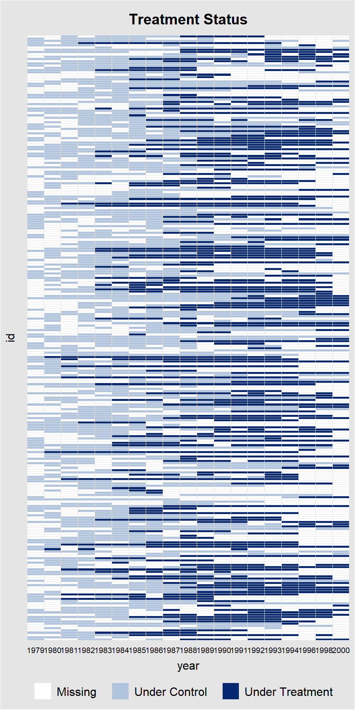
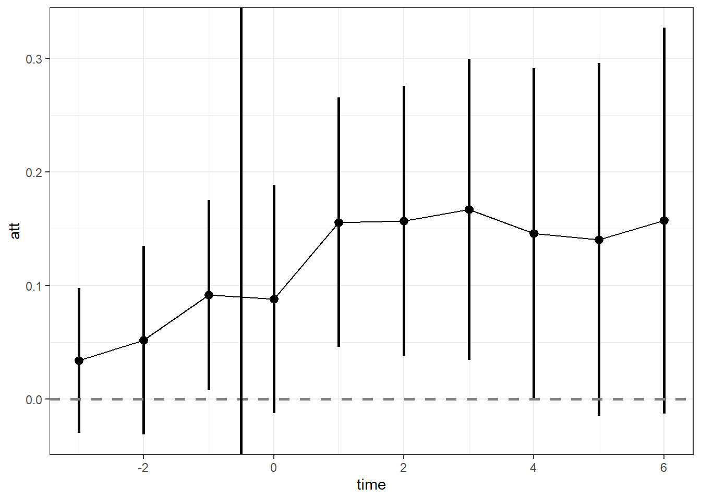
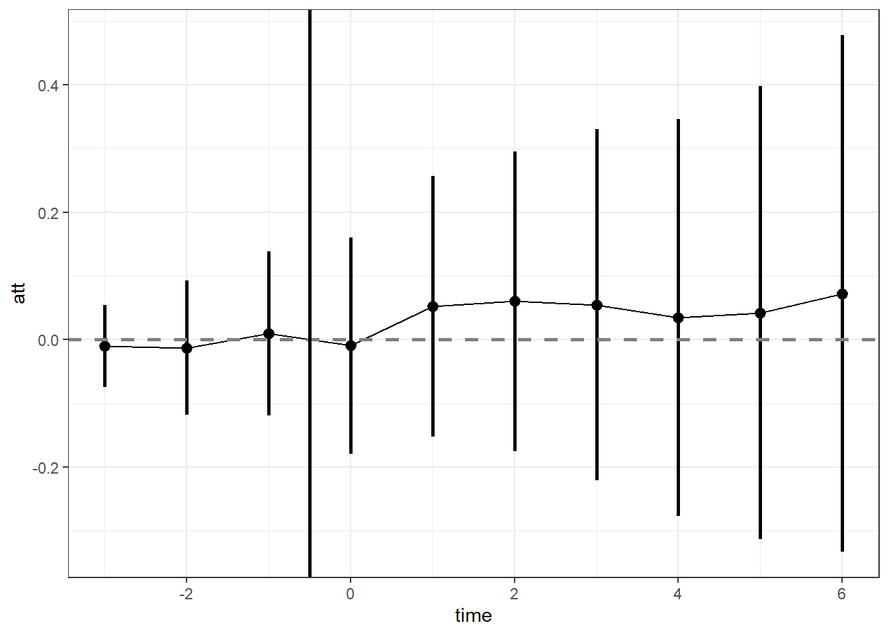
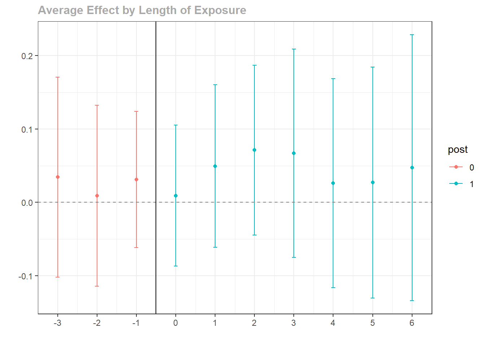

2) Extensions
Tobias Rüttenauer
December 03, 2021
Required packages
pkgs <- c("plm", "feisr", "did", "panelView", "texreg", "tidyr", "dplyr", "ggplot2", "ggforce")
lapply(pkgs, require, character.only = TRUE)Session info
sessionInfo()## R version 4.1.0 (2021-05-18)
## Platform: x86_64-w64-mingw32/x64 (64-bit)
## Running under: Windows 10 x64 (build 19042)
##
## Matrix products: default
##
## locale:
## [1] LC_COLLATE=English_United Kingdom.1252
## [2] LC_CTYPE=English_United Kingdom.1252
## [3] LC_MONETARY=English_United Kingdom.1252
## [4] LC_NUMERIC=C
## [5] LC_TIME=English_United Kingdom.1252
##
## attached base packages:
## [1] stats graphics grDevices utils datasets methods base
##
## other attached packages:
## [1] ggforce_0.3.3 ggplot2_3.3.5 dplyr_1.0.6 tidyr_1.1.3
## [5] texreg_1.37.5 panelView_1.1.2 did_2.0.0 feisr_1.2.0
## [9] plm_2.4-1
##
## loaded via a namespace (and not attached):
## [1] httr_1.4.2 sass_0.4.0 jsonlite_1.7.2 carData_3.0-4
## [5] bslib_0.2.5.1 Formula_1.2-4 Rdpack_2.1.2 assertthat_0.2.1
## [9] cellranger_1.1.0 yaml_2.2.1 pillar_1.6.2 backports_1.2.1
## [13] lattice_0.20-44 glue_1.4.2 digest_0.6.27 polyclip_1.10-0
## [17] ggsignif_0.6.2 rbibutils_2.2 colorspace_2.0-1 sandwich_3.0-1
## [21] htmltools_0.5.1.1 pkgconfig_2.0.3 broom_0.7.7 haven_2.4.2
## [25] purrr_0.3.4 scales_1.1.1 tweenr_1.0.2 openxlsx_4.2.4
## [29] rio_0.5.26 tibble_3.1.2 farver_2.1.0 generics_0.1.0
## [33] car_3.0-11 ellipsis_0.3.2 ggpubr_0.4.0 withr_2.4.2
## [37] maxLik_1.4-8 magrittr_2.0.1 crayon_1.4.1 readxl_1.3.1
## [41] evaluate_0.14 fansi_0.5.0 nlme_3.1-152 MASS_7.3-54
## [45] rstatix_0.7.0 forcats_0.5.1 foreign_0.8-81 tools_4.1.0
## [49] data.table_1.14.0 hms_1.1.0 lifecycle_1.0.0 stringr_1.4.0
## [53] munsell_0.5.0 zip_2.2.0 compiler_4.1.0 jquerylib_0.1.4
## [57] rlang_0.4.11 grid_4.1.0 miscTools_0.6-26 rmarkdown_2.11
## [61] gtable_0.3.0 abind_1.4-5 DBI_1.1.1 curl_4.3.1
## [65] R6_2.5.1 gridExtra_2.3 zoo_1.8-9 knitr_1.33
## [69] bdsmatrix_1.3-4 utf8_1.2.1 stringi_1.6.2 Rcpp_1.0.7
## [73] vctrs_0.3.8 tidyselect_1.1.1 xfun_0.23 lmtest_0.9-38Outline
Fixed Effects Individual Slopes
Dynamic treatment effects
TBD: Dynamic Diff-in-Diff
TBD: Synthetic Control
TBD: Generalized Synthetic Control
Fixed Effects Individual Slopes (FEIS)
Remeber that we have to make the parallel trends assumption in twoways FE models. A violation of the parallel trends assumption leads to biased estimates. Usually, when controlling for time or time fixed effects, we make the assumption that every observation experiences the same “effect of time.”
However, we can relax this assumption by giving each individual their own intercept and their own slope.
The fixed effects individual slope (FEIS) estimator is a more general version of the well-known fixed effects estimator (FE), which allows to control for heterogeneous slopes in addition to time-constant heterogeneity (e.g. Brüderl and Ludwig 2015; Polachek and Kim 1994; Rüttenauer and Ludwig 2020; Wooldridge 2010). Formally, the FEIS estimator can be expressed as
\[ \begin{align} \boldsymbol{\mathbf{y}}_{i} =& \boldsymbol{\mathbf{X}}_{i}\boldsymbol{\mathbf{\beta }}+ \boldsymbol{\mathbf{W}}_i \boldsymbol{\mathbf{\alpha}}_i + \boldsymbol{\mathbf{\epsilon}}_{i}, \end{align} \] where \(\boldsymbol{\mathbf{y}}_{i}\) is \(T \times 1\), \(\boldsymbol{\mathbf{X}}_{i}\) is \(T \times K\), and \(\boldsymbol{\mathbf{\epsilon}}_{i}\) is \(T \times 1\). \(\boldsymbol{\mathbf{W}}_i\) is a \(T \times J\) matrix of slope variables, and \(\boldsymbol{\mathbf{\alpha}}_i\) a \(J \times 1\) vector of individual-specific slope parameters, for \(J\) slope parameters including a constant term. If \(\boldsymbol{\mathbf{W}}_i\) consists of a constant term only, \(\boldsymbol{\mathbf{W}}_i = \boldsymbol{\mathbf{1}}\), thus \(\boldsymbol{\mathbf{\alpha}}_i\) reduces to \(\alpha_{i1}\), and the above equation represents the well-known formula of a conventional FE model with individual fixed effects.
As with the conventional FE, FEIS can be estimated using lm() by including \(N-1\) individual-specific dummies and interaction terms of each slope variable with the \(N-1\) individual-specific dummies (\((N-1) *J\) controls). This is however highly inefficient. As with the conventional FE estimator, we can achieve the same result by running an lm() on pre-transformed data. Therefore, specify the ‘residual maker’ matrix \(\boldsymbol{\mathbf{M}}_i = \boldsymbol{\mathbf{I}}_T - \boldsymbol{\mathbf{W}}_i(\boldsymbol{\mathbf{W}}^\intercal_i \boldsymbol{\mathbf{W}}_i)^{-1}\boldsymbol{\mathbf{W}}^\intercal_i\), and estimate \[
\begin{align}
y_{it} - \hat{y}_{it} =& (\boldsymbol{\mathbf{x}}_{it} - \hat{\boldsymbol{\mathbf{x}}}_{it})\boldsymbol{\mathbf{\beta }}+ \epsilon_{it} - \hat{\epsilon}_{it}, \\
\boldsymbol{\mathbf{M}}_i \boldsymbol{\mathbf{y}}_i =& \boldsymbol{\mathbf{M}}_i \boldsymbol{\mathbf{X}}_i\boldsymbol{\mathbf{\beta }}+ \boldsymbol{\mathbf{M}}_i \boldsymbol{\mathbf{\epsilon}}_{i}, \\
\tilde{\boldsymbol{\mathbf{y}}}_{i} =& \tilde{\boldsymbol{\mathbf{X}}}_{i}\boldsymbol{\mathbf{\beta }}+ \tilde{\boldsymbol{\mathbf{\epsilon}}}_{i},
\end{align}
\] where \(\tilde{\boldsymbol{\mathbf{y}}}_{i}\), \(\tilde{\boldsymbol{\mathbf{X}}}_{i}\), and \(\tilde{\boldsymbol{\mathbf{\epsilon}}}_{i}\) are the residuals of regressing \(\boldsymbol{\mathbf{y}}_{i}\), each column-vector of \(\boldsymbol{\mathbf{X}}_{i}\), and \(\boldsymbol{\mathbf{\epsilon}}_{i}\) on \(\boldsymbol{\mathbf{W}}_i\). Intuitively, we (1) estimate the individual-specific predicted values for the dependent variable and each covariate based on an individual intercept and the additional slope variables of \(\boldsymbol{\mathbf{W}}_i\), (2) ‘detrend’ the original data by these individual-specific predicted values, and (3) run an OLS model on the residual data.
Similarly, we can estimate a correlated random effects (CRE) model (Chamberlain 1982; Mundlak 1978; Wooldridge 2010) including the individual specific predictions \(\hat{\boldsymbol{\mathbf{X}}}_{i}\) to obtain the FEIS estimator: \[ \begin{align} \boldsymbol{\mathbf{y}}_{i} =& \boldsymbol{\mathbf{X}}_{i}\boldsymbol{\mathbf{\beta }}+ \hat{\boldsymbol{\mathbf{X}}}_{i}\boldsymbol{\mathbf{\rho }}+ \boldsymbol{\mathbf{\epsilon}}_{i}. \end{align} \]
Example
As an example, we use the mwp panel data, containing information on wages and family status of 268 men. This is a random sample drawn from the National Longitudinal Survey of Youth (Bureau of Labor Statistics 2014), and more details on the selection of observations and variable construction can be found in Ludwig and Brüderl (2018).
data("mwp", package = "feisr")
head(mwp)## id year lnw exp expq marry evermarry enrol yeduc age cohort
## 1 1 1981 1.934358 1.076923 1.159763 0 1 1 11 18 1963
## 2 1 1983 2.468140 3.019231 9.115755 0 1 1 12 20 1963
## 3 1 1984 2.162480 4.038462 16.309174 0 1 1 12 21 1963
## 4 1 1985 1.746280 5.076923 25.775146 0 1 0 12 22 1963
## 5 1 1986 2.527840 6.096154 37.163090 0 1 1 13 23 1963
## 6 1 1987 2.365361 7.500000 56.250000 0 1 1 13 24 1963
## yeargr yeargr1 yeargr2 yeargr3 yeargr4 yeargr5
## 1 2 0 1 0 0 0
## 2 2 0 1 0 0 0
## 3 2 0 1 0 0 0
## 4 2 0 1 0 0 0
## 5 3 0 0 1 0 0
## 6 3 0 0 1 0 0The data set contains a unique person identifier (id) and survey year indicator (year). Furthermore, we have information about the log hourly wage rate (lnwage), work experience (exp) and its square (expq), family status (marry), enrollment in current education (enrol), years of formal education education (yeduc), age (age), birth cohort (cohort), and a grouped year indicator (yeargr).
we exemplary investigate the ‘marriage wage premium’: we analyze whether marriage leads to an increase in the hourly wage for men. We use the function feis to estimate fixed effects individual slope models to control for the hypothesis that those men who are more likely to marry or marry earlier, also have a steeper wage growth over time.
Let’s start with our most common panel models (FE and RE):
wages.fe <- plm(lnw ~ marry + enrol + yeduc + as.factor(yeargr)
+ exp + I(exp^2), data = mwp, index = c("id", "year"),
model = "within", effect = "individual")
wages.re <- plm(lnw ~ marry + enrol + yeduc + as.factor(yeargr)
+ exp + I(exp^2), data = mwp, index = c("id", "year"),
model = "random", effect = "individual")
summary(wages.fe)## Oneway (individual) effect Within Model
##
## Call:
## plm(formula = lnw ~ marry + enrol + yeduc + as.factor(yeargr) +
## exp + I(exp^2), data = mwp, effect = "individual", model = "within",
## index = c("id", "year"))
##
## Unbalanced Panel: n = 268, T = 4-19, N = 3100
##
## Residuals:
## Min. 1st Qu. Median 3rd Qu. Max.
## -2.5870006 -0.1580744 0.0081262 0.1701488 1.9958088
##
## Coefficients:
## Estimate Std. Error t-value Pr(>|t|)
## marry 0.07773216 0.02160148 3.5985 0.0003256 ***
## enrol -0.20810059 0.02282898 -9.1156 < 2.2e-16 ***
## yeduc 0.05584485 0.00715655 7.8033 8.424e-15 ***
## as.factor(yeargr)2 -0.14080625 0.03036533 -4.6371 3.694e-06 ***
## as.factor(yeargr)3 -0.16453499 0.04696595 -3.5033 0.0004667 ***
## as.factor(yeargr)4 -0.27553668 0.06196892 -4.4464 9.071e-06 ***
## as.factor(yeargr)5 -0.29750723 0.07932341 -3.7506 0.0001800 ***
## exp 0.07299927 0.00867777 8.4122 < 2.2e-16 ***
## I(exp^2) -0.00127502 0.00036103 -3.5317 0.0004196 ***
## ---
## Signif. codes: 0 '***' 0.001 '**' 0.01 '*' 0.05 '.' 0.1 ' ' 1
##
## Total Sum of Squares: 559.75
## Residual Sum of Squares: 327.88
## R-Squared: 0.41424
## Adj. R-Squared: 0.35697
## F-statistic: 221.816 on 9 and 2823 DF, p-value: < 2.22e-16and we calculate panel robust standard errors and attach them back to the model output:
# Calculate vcov
vcovx_fe <- vcovHC(wages.fe, cluster = "group", method = "arellano", type = "HC3")
vcovx_re <- vcovHC(wages.re, cluster = "group", method = "arellano", type = "HC3")
# Replace original vcov in output
wages.fe$vcov <- vcovx_fe
wages.re$vcov <- vcovx_reReplacing has the advantage that we know use the cluster robust SEs in all following operations (like summary() or screenreg).
summary(wages.fe)## Oneway (individual) effect Within Model
##
## Call:
## plm(formula = lnw ~ marry + enrol + yeduc + as.factor(yeargr) +
## exp + I(exp^2), data = mwp, effect = "individual", model = "within",
## index = c("id", "year"))
##
## Unbalanced Panel: n = 268, T = 4-19, N = 3100
##
## Residuals:
## Min. 1st Qu. Median 3rd Qu. Max.
## -2.5870006 -0.1580744 0.0081262 0.1701488 1.9958088
##
## Coefficients:
## Estimate Std. Error t-value Pr(>|t|)
## marry 0.07773216 0.03160634 2.4594 0.0139771 *
## enrol -0.20810059 0.02738300 -7.5996 4.015e-14 ***
## yeduc 0.05584485 0.01025801 5.4440 5.656e-08 ***
## as.factor(yeargr)2 -0.14080625 0.03554205 -3.9617 7.627e-05 ***
## as.factor(yeargr)3 -0.16453499 0.05338645 -3.0820 0.0020763 **
## as.factor(yeargr)4 -0.27553668 0.06829208 -4.0347 5.613e-05 ***
## as.factor(yeargr)5 -0.29750723 0.08916462 -3.3366 0.0008591 ***
## exp 0.07299927 0.01245954 5.8589 5.198e-09 ***
## I(exp^2) -0.00127502 0.00057274 -2.2262 0.0260794 *
## ---
## Signif. codes: 0 '***' 0.001 '**' 0.01 '*' 0.05 '.' 0.1 ' ' 1
##
## Total Sum of Squares: 559.75
## Residual Sum of Squares: 327.88
## R-Squared: 0.41424
## Adj. R-Squared: 0.35697
## F-statistic: 77.9716 on 9 and 2823 DF, p-value: < 2.22e-16And now, we allow the individual specific trends. To replicate the analysis of Ludwig and Brüderl (2018), we use work experience (exp) and squared work experience as the slope variables.
One mayor advantage of using work experience as slope it that we can still control for (grouped) time fixed effects
Assuming linear trends (only using exp), is a strong assumption. However, for each additional slope (e.g. polynomial), FEIS becomes more data hungry: each individual needs at least \(T \geq K + 1\) observations to contribute to the model. If not, they are dropped!
Here we use feis with panel robust standard errors. The command felm from lfe can be used to calculate individual slopes as well.
wages.feis <- feis(lnw ~ marry + enrol + yeduc + as.factor(yeargr)
| exp + I(exp^2), data = mwp, id = "id",
robust = TRUE)
summary(wages.feis)##
##
## Call:
## feis(formula = lnw ~ marry + enrol + yeduc + as.factor(yeargr) |
## exp + I(exp^2), data = mwp, id = "id", robust = TRUE)
##
##
## Residuals:
## Min. 1st Qu. Median 3rd Qu. Max.
## -2.0790815 -0.1050450 0.0046876 0.1112708 1.9412090
##
## Coefficients:
## Estimate Std. Error t-value Pr(>|t|)
## marry 0.0134582 0.0292771 0.4597 0.64579
## enrol -0.1181725 0.0235003 -5.0286 5.325e-07 ***
## yeduc -0.0020607 0.0175059 -0.1177 0.90630
## as.factor(yeargr)2 -0.0464504 0.0378675 -1.2267 0.22008
## as.factor(yeargr)3 -0.0189333 0.0524265 -0.3611 0.71803
## as.factor(yeargr)4 -0.1361305 0.0615033 -2.2134 0.02697 *
## as.factor(yeargr)5 -0.1868589 0.0742904 -2.5152 0.01196 *
## ---
## Signif. codes: 0 '***' 0.001 '**' 0.01 '*' 0.05 '.' 0.1 ' ' 1
##
## Cluster robust standard errors
## Slope parameters: exp, I(exp^2)
## Total Sum of Squares: 190.33
## Residual Sum of Squares: 185.64
## R-Squared: 0.024626
## Adj. R-Squared: 0.022419Let’s compare the results.
screenreg(list(wages.re, wages.fe, wages.feis), digits = 3,
custom.model.names = c("RE", "FE", "FEIS"))##
## ============================================================
## RE FE FEIS
## ------------------------------------------------------------
## (Intercept) 1.562 ***
## (0.094)
## marry 0.091 ** 0.078 * 0.013
## (0.032) (0.032) (0.029)
## enrol -0.202 *** -0.208 *** -0.118 ***
## (0.025) (0.027) (0.024)
## yeduc 0.063 *** 0.056 *** -0.002
## (0.008) (0.010) (0.018)
## as.factor(yeargr)2 -0.157 *** -0.141 *** -0.046
## (0.034) (0.036) (0.038)
## as.factor(yeargr)3 -0.197 *** -0.165 ** -0.019
## (0.050) (0.053) (0.052)
## as.factor(yeargr)4 -0.316 *** -0.276 *** -0.136 *
## (0.066) (0.068) (0.062)
## as.factor(yeargr)5 -0.349 *** -0.298 *** -0.187 *
## (0.089) (0.089) (0.074)
## exp 0.074 *** 0.073 ***
## (0.012) (0.012)
## exp^2 -0.001 * -0.001 *
## (0.001) (0.001)
## ------------------------------------------------------------
## s_idios 0.341
## s_id 0.279
## R^2 0.440 0.414 0.025
## Adj. R^2 0.439 0.357 0.022
## Num. obs. 3100 3100 3100
## Num. groups: id 268
## RMSE 0.285
## ============================================================
## *** p < 0.001; ** p < 0.01; * p < 0.05Interpretation:
RE: Married observations have a significantly higher wage than unmarried observations.
FE: If people marry, they experience an increase in wages afterwards. The effect is significant and slightly lower than the RE.
FEIS: Accounting for the individual wage trend before marriage, we do not observe an increase in wages if people marry. The effect is small and non-significant.
Overall, this indicated that there is a problem with non-parallel trends: Those with steeper wage trajectories are more likely to marry (or marry earlier).
Dynamic treatment effects
Often, we are not only interested in the overall treatment effect, but we also want to know how treatment effects unfold after a treatment. For example, how does happiness change around specific life course events (Clark and Georgellis 2013), or how do housing prices develop after the opening of an industrial plant (Currie et al. 2015)?
There are various ways of calculating how a treatment effect develops over time:

Brüderl/Ludwig 2019, https://www.ls3.soziologie.uni-muenchen.de/studium-lehre/archiv/teaching-marterials/panel-analysis_april-2019.pdf
Usually, it is best to not impose a structural form, but rather to use dummy impact functions. However, even with this, there is an ongoing debate on what is the best choice of specification (Ludwig and Brüderl 2021), or see for instance blog post by Pedro H. C. Sant’Anna and Brantly Callaway.
Note that these settings usually require a staggered treatment adoption: individuals are treated once, and afterwards reamin treated
There are many cases where this does not apply. However, one can think about potential ways of artificially creating such designs:
Dichotomize continuous treatments (if theoretically plausible!)
Create id-period splits. E.g. if a person gets divorced, either drop from sample, or treat as a “new id” as a person can re-marry (note that this assumes that first and second marriage have equal effects).
Example
We stick with our example and try to estimate how the wage changes around the year of marriage.
To do so, we first estimate make sure the data is ordered by id and time
mwp <- mwp[order(mwp$id, mwp$year), ]
head(mwp[, 1:6], n = 20)## id year lnw exp expq marry
## 1 1 1981 1.934358 1.0769231 1.1597635 0
## 2 1 1983 2.468140 3.0192308 9.1157551 0
## 3 1 1984 2.162480 4.0384617 16.3091736 0
## 4 1 1985 1.746280 5.0769229 25.7751465 0
## 5 1 1986 2.527840 6.0961537 37.1630898 0
## 6 1 1987 2.365361 7.5000000 56.2500000 0
## 7 1 1988 2.467478 8.6730766 75.2222595 1
## 8 1 1989 4.398027 9.4423075 89.1571732 1
## 9 1 1990 2.822144 10.7307692 115.1494064 1
## 10 1 1991 2.654965 11.6730766 136.2607117 1
## 11 1 1992 2.665088 12.6730766 160.6068726 1
## 12 2 1979 2.236233 0.9423077 0.8879438 0
## 13 2 1981 2.916389 2.9615386 8.7707109 0
## 14 2 1982 2.751646 3.8269231 14.6453409 0
## 15 2 1983 2.629372 4.4807692 20.0772915 0
## 16 2 1984 2.965442 5.5384617 30.6745586 0
## 17 2 1985 2.890669 6.6538463 44.2736702 0
## 18 2 1989 2.392579 11.1538458 124.4082794 0
## 19 3 1979 2.456405 1.1730769 1.3761094 0
## 20 3 1980 2.661142 2.1153846 4.4748521 0Then, we make sure that our data looks like a staggered treatment design. Are there people who jump from married to not married in the data?
# Change in marriage status within an id
mwp$fd_marry <- ave(mwp$marry,
mwp$id,
FUN = function(x) x - dplyr::lag(x, 1, default = 0)) # 0 insteat of NA for 1st year
# Mark observations starting with a negative fd value (jump from marry=1 to marry =0)
mwp$notstag_marry <- ave(ifelse(mwp$fd_marry == -1, 1, 0),
mwp$id,
FUN = function(x) cumsum(x))
table(mwp$fd_marry)##
## 0 1
## 2896 204table(mwp$notstag_marry)##
## 0
## 3100Luckily, the dataset is already cleaned: there are only transitions into marriage, not out of marriage.
Next we want to make sure if there are any individuals who already start with the treatment (who are married right from their first wave on).
We only want to have those in our sample who potentially can go from not-treated to treated!
mwp <- mwp[order(mwp$id, mwp$year), ] # just to be sure
# Person year number
mwp$pynr <- ave(mwp$year,
mwp$id,
FUN = function(x) 1:length(x))
# Marry status at first wave
mwp$f_marry <- ifelse(mwp$pynr == 1, mwp$marry, NA)
# Distribute across individual, using mean and na.rm = TRUE
mwp$f_marry <- ave(mwp$f_marry,
mwp$id,
FUN = function(x) mean(x, na.rm = TRUE))
table(mwp$f_marry)##
## 0
## 3100Again, someone has already done the job. There are no individuals who start married in the first wave.
We can also look at this graphically with panelView (mainly helpful for small N data):
panelView(lnw ~ marry,
data = mwp, index = c("id","year"),
type = "treat", theme.bw = TRUE)
Alright, so lets create a dummy impact function / a count variable around the treatment.
mwp <- mwp[order(mwp$id, mwp$year), ] # just to be sure!!
# Function that creates distance to the treatment (assuming 0=control, 1=treated)
impfun <- function(x, default = -99){
nas <- which(is.na(x)) #save nas
ft <- which(x == 1)[1] #first teatment index
if(is.na(ft)){ #replicate default if never treated
count <- rep(default, length(x))
}else{
ri <- 1:length(x) #running index
count <- ri - ft #distance to first treatment
}
if(length(nas) != 0){ #replace nas if any
count[nas] <- NA
}
return(count) #return counter
}
# Apply to each individual
mwp$marry_if <- ave(mwp$marry,
mwp$id,
FUN = function(x) impfun(x))
head(mwp[, c("id", "year", "marry", "marry_if")], n = 50)## id year marry marry_if
## 1 1 1981 0 -6
## 2 1 1983 0 -5
## 3 1 1984 0 -4
## 4 1 1985 0 -3
## 5 1 1986 0 -2
## 6 1 1987 0 -1
## 7 1 1988 1 0
## 8 1 1989 1 1
## 9 1 1990 1 2
## 10 1 1991 1 3
## 11 1 1992 1 4
## 12 2 1979 0 -99
## 13 2 1981 0 -99
## 14 2 1982 0 -99
## 15 2 1983 0 -99
## 16 2 1984 0 -99
## 17 2 1985 0 -99
## 18 2 1989 0 -99
## 19 3 1979 0 -99
## 20 3 1980 0 -99
## 21 3 1981 0 -99
## 22 3 1982 0 -99
## 23 3 1983 0 -99
## 24 3 1984 0 -99
## 25 3 1985 0 -99
## 26 3 1986 0 -99
## 27 3 1987 0 -99
## 28 3 1988 0 -99
## 29 3 1989 0 -99
## 30 3 1993 0 -99
## 31 3 1994 0 -99
## 32 3 2000 0 -99
## 33 4 1979 0 -2
## 34 4 1981 0 -1
## 35 4 1982 1 0
## 36 4 1983 1 1
## 37 4 1984 1 2
## 38 4 1985 1 3
## 39 4 1986 1 4
## 40 4 1987 1 5
## 41 4 1988 1 6
## 42 4 1989 1 7
## 43 4 1990 1 8
## 44 4 1991 1 9
## 45 4 1992 1 10
## 46 4 1993 1 11
## 47 5 1979 0 -6
## 48 5 1980 0 -5
## 49 5 1981 0 -4
## 50 5 1982 0 -3We can now use this time count function to estimate dynamic treatment effects.
Note that we need to make to important decisions (blog post by Pedro H. C. Sant’Anna and Brantly Callaway):
Which dates to use a reference category
How many pre-treatment periods to include (to test for anticipation or potential pre-treatment differences)
Here, re will just include three periods before marriage and use the rest as reference categories
# Set all before -3 to -99
mwp$marry_if[mwp$marry_if < -3 & mwp$marry_if > -99] <- -99
# Make factor with -99 as reference category
mwp$marry_if <- as.factor(mwp$marry_if)
mwp$marry_if <- relevel(mwp$marry_if, "-99")And we use this as our treatment variable in the FE estimator.
# Standard marriage indicator
wages.fe <- plm(lnw ~ marry + enrol + yeduc + as.factor(yeargr)
+ exp + I(exp^2), data = mwp, index = c("id", "year"),
model = "within", effect = "individual")
# with dummy impact function
wages2.fe <- plm(lnw ~ marry_if + enrol + yeduc + as.factor(yeargr)
+ exp + I(exp^2), data = mwp, index = c("id", "year"),
model = "within", effect = "individual")
# add cluster robust SEs
vcovx_fe2 <- vcovHC(wages2.fe, cluster = "group", method = "arellano", type = "HC3")
wages2.fe$vcov <- vcovx_fe2
summary(wages2.fe)## Oneway (individual) effect Within Model
##
## Call:
## plm(formula = lnw ~ marry_if + enrol + yeduc + as.factor(yeargr) +
## exp + I(exp^2), data = mwp, effect = "individual", model = "within",
## index = c("id", "year"))
##
## Unbalanced Panel: n = 268, T = 4-19, N = 3100
##
## Residuals:
## Min. 1st Qu. Median 3rd Qu. Max.
## -2.566752 -0.160001 0.010038 0.175003 2.011790
##
## Coefficients:
## Estimate Std. Error t-value Pr(>|t|)
## marry_if-3 0.03388225 0.03253942 1.0413 0.2978411
## marry_if-2 0.05166995 0.04238715 1.2190 0.2229466
## marry_if-1 0.09151624 0.04265046 2.1457 0.0319803 *
## marry_if0 0.08816919 0.05121551 1.7215 0.0852644 .
## marry_if1 0.15544954 0.05601346 2.7752 0.0055530 **
## marry_if2 0.15658061 0.06078860 2.5758 0.0100509 *
## marry_if3 0.16687443 0.06762257 2.4677 0.0136564 *
## marry_if4 0.14591461 0.07412203 1.9686 0.0491005 *
## marry_if5 0.14033773 0.07930392 1.7696 0.0768992 .
## marry_if6 0.15706194 0.08660097 1.8136 0.0698418 .
## marry_if7 0.13008248 0.09727237 1.3373 0.1812327
## marry_if8 0.11979150 0.10451397 1.1462 0.2518197
## marry_if9 0.14007172 0.10390453 1.3481 0.1777412
## marry_if10 0.11550144 0.11151584 1.0357 0.3004126
## marry_if11 0.20483579 0.12281306 1.6679 0.0954538 .
## marry_if12 0.10767466 0.12345702 0.8722 0.3831940
## marry_if13 0.10542488 0.13897395 0.7586 0.4481589
## marry_if14 -0.13934447 0.12815514 -1.0873 0.2769929
## enrol -0.20477142 0.02737332 -7.4807 9.833e-14 ***
## yeduc 0.05500238 0.01059840 5.1897 2.257e-07 ***
## as.factor(yeargr)2 -0.13830215 0.03594278 -3.8478 0.0001218 ***
## as.factor(yeargr)3 -0.16356110 0.05379641 -3.0404 0.0023847 **
## as.factor(yeargr)4 -0.27248909 0.06839547 -3.9840 6.948e-05 ***
## as.factor(yeargr)5 -0.28895919 0.08907335 -3.2441 0.0011922 **
## exp 0.06728858 0.01357307 4.9575 7.565e-07 ***
## I(exp^2) -0.00111675 0.00061151 -1.8262 0.0679250 .
## ---
## Signif. codes: 0 '***' 0.001 '**' 0.01 '*' 0.05 '.' 0.1 ' ' 1
##
## Total Sum of Squares: 559.75
## Residual Sum of Squares: 325.96
## R-Squared: 0.41767
## Adj. R-Squared: 0.35686
## F-statistic: 75.8727 on 26 and 2806 DF, p-value: < 2.22e-16Let’s plot that
# Set up results matrix
coef.df <- data.frame(matrix(NA,
nrow = (length(levels(mwp$marry_if)) - 1),
ncol = 3))
colnames(coef.df) <- c("time", "att", "se")
# paste results
coef.df$time <- c(-3:14)
output <- summary(wages2.fe)$coefficients
coef.df[, c("att", "se")] <- output[which(grepl("marry_if", rownames(output))), 1:2]
# 95% CI
interval2 <- -qnorm((1-0.95)/2) # 95% multiplier
coef.df$ll <- coef.df$att - coef.df$se*interval2
coef.df$ul <- coef.df$att + coef.df$se*interval2
# Plot
zp1 <- ggplot(coef.df[coef.df$time < 7, ],
aes(x = time, y = att)) +
geom_pointrange(aes(x = time, y = att, ymin = ll, ymax = ul),
lwd = 1, fatten = 2) +
geom_line(aes(x = time, y = att)) +
geom_hline(yintercept = 0, colour = gray(1/2), lty = 2, lwd = 1) +
geom_vline(xintercept = -0.5, colour = "black", lty = 1, lwd = 1) +
theme_bw()
zp1
An interesting finding here. There is a positive anticipation effect: “The anticipation of marriage already increases the husbands wage.”
Is this plausible?
FEIS
Obviously, we can also use these dummy impact function in other estimators.
### FEIS with dummy impact function
wages2.feis <- feis(lnw ~ marry_if + enrol + yeduc + as.factor(yeargr)
| exp + I(exp^2),
data = mwp, id = "id",
robust = TRUE)
summary(wages2.feis)##
##
## Call:
## feis(formula = lnw ~ marry_if + enrol + yeduc + as.factor(yeargr) |
## exp + I(exp^2), data = mwp, id = "id", robust = TRUE)
##
##
## Residuals:
## Min. 1st Qu. Median 3rd Qu. Max.
## -2.0385140 -0.1070148 0.0063363 0.1116305 1.9422823
##
## Coefficients:
## Estimate Std. Error t-value Pr(>|t|)
## marry_if-3 -0.01009512 0.03282428 -0.3076 0.75845
## marry_if-2 -0.01269923 0.05387564 -0.2357 0.81368
## marry_if-1 0.00945697 0.06556529 0.1442 0.88533
## marry_if0 -0.00934465 0.08669423 -0.1078 0.91417
## marry_if1 0.05239527 0.10439373 0.5019 0.61579
## marry_if2 0.06024667 0.11996538 0.5022 0.61558
## marry_if3 0.05481404 0.14066586 0.3897 0.69681
## marry_if4 0.03469671 0.15894441 0.2183 0.82722
## marry_if5 0.04209049 0.18134196 0.2321 0.81648
## marry_if6 0.07219889 0.20694589 0.3489 0.72721
## marry_if7 0.05371600 0.22543835 0.2383 0.81169
## marry_if8 0.00422209 0.26924683 0.0157 0.98749
## marry_if9 0.05496285 0.29238662 0.1880 0.85091
## marry_if10 0.08980275 0.34176479 0.2628 0.79276
## marry_if11 0.18093806 0.40047134 0.4518 0.65145
## marry_if12 0.11491753 0.44824664 0.2564 0.79769
## marry_if13 0.07479506 0.51906834 0.1441 0.88544
## marry_if14 0.14775390 0.57381382 0.2575 0.79682
## enrol -0.11902058 0.02363290 -5.0362 5.122e-07 ***
## yeduc -0.00082298 0.01772763 -0.0464 0.96298
## as.factor(yeargr)2 -0.04618140 0.04080643 -1.1317 0.25787
## as.factor(yeargr)3 -0.01934802 0.05387474 -0.3591 0.71953
## as.factor(yeargr)4 -0.13656650 0.06179928 -2.2098 0.02722 *
## as.factor(yeargr)5 -0.18414365 0.07407322 -2.4860 0.01299 *
## ---
## Signif. codes: 0 '***' 0.001 '**' 0.01 '*' 0.05 '.' 0.1 ' ' 1
##
## Cluster robust standard errors
## Slope parameters: exp, I(exp^2)
## Total Sum of Squares: 190.33
## Residual Sum of Squares: 184.71
## R-Squared: 0.029511
## Adj. R-Squared: 0.021939### Plot
# Set up results matrix
coef2.df <- data.frame(matrix(NA,
nrow = (length(levels(mwp$marry_if)) - 1),
ncol = 3))
colnames(coef2.df) <- c("time", "att", "se")
# paste results
coef2.df$time <- c(-3:14)
output <- summary(wages2.feis)$coefficients
coef2.df[, c("att", "se")] <- output[which(grepl("marry_if", rownames(output))), 1:2]
# 95% CI
interval2 <- -qnorm((1-0.95)/2) # 95% multiplier
coef2.df$ll <- coef2.df$att - coef2.df$se*interval2
coef2.df$ul <- coef2.df$att + coef2.df$se*interval2
# Plot
zp2 <- ggplot(coef2.df[coef2.df$time < 7, ],
aes(x = time, y = att)) +
geom_pointrange(aes(x = time, y = att, ymin = ll, ymax = ul),
lwd = 1, fatten = 2) +
geom_line(aes(x = time, y = att)) +
geom_hline(yintercept = 0, colour = gray(1/2), lty = 2, lwd = 1) +
geom_vline(xintercept = -0.5, colour = "black", lty = 1, lwd = 1) +
theme_bw()
zp2
This gives us what we already expected: using FEIS, the marital wage premium disappears.
Dynamic Diff-in-Diff
There is an ongoing discussion on how the Difference in Differences estimator relates to the two-ways FE estimator when treatment timing varies: different individuals receive the treatment at different periods.
Goodman-Bacon (2021) shows that the two-ways FE is a weighted average of all possbile two-group/two-period DD estimators. The weights determining how much each of these single combinations contributes to the two-ways FE are determined by the group size (e.g. how long do we observe each combination before and after treatment) and the variance in the treatment.

Two-ways FE and DD with varying treatment timing (Goodman-Bacon 2021).
For instance, those who are treated in later time periods are not only compared to those who are never treated but also to those who have already been treated in earlier periods.
Especially for “trend-breaking” treatment effects like in the following figure, this will lead to biased estimates of the average treatment effect (Goodman-Bacon 2021; Meer and West 2016).

Bias of two-ways FE with trend-breaking treatment (Goodman-Bacon 2021).
In this example, in the middle period, we compare the break in treand in the early tread with the late treated, and we see the divergence between those two groups. However, for the later treated (right third), the earlier treated are the control cases, and we do not observe that there is actually a break in trend.
One way of counteracting this problem is to use event study / impact function designs (see above) to explicitly model time varying treatment effects.
A second way is the application of flexible Diff-in-Diff estimators as proposed by (Callaway.2020?).
Formally, we do
TBD
Intuitively, this means, we estimate an individual treatment effect for each combination of treatment-timing-group and potential control group.
Obviously, this gives us a large number of different treatment effects. So, in a second step, we re-aggregate these individual combinations back to goup or time averaged treatment effect.
For a more detailled introdution see (Callaway.2020?) or the respective package introcution.
Example
How does that look in our marriage example? To estimate the dynamic DD we use the did package, as describes in more detail here or in the authors blog.
Note: This package works witch staggered treatment adoption! We thus should perform all the steps we have performed above to restrict and prepare the data!
As a first step, we need to define a variable that contains the treatment timing: the first year an ever-treated individual is treated.
This should be a positive number for all observations in treated groups. It defines which “group” a unit belongs to. It should be 0 for units in the untreated group.
# treatment timing = year if married
mwp$treat_timing <- ifelse(mwp$marry == 1, mwp$year, NA)
# set never treated to zero
mwp$treat_timing[mwp$evermarry == 0] <- 0
# if married is not NA, used min year per id (removing NAs)
mwp$treat_timing[!is.na(mwp$marry)] <- ave(mwp$treat_timing[!is.na(mwp$marry)],
mwp$id[!is.na(mwp$marry)],
FUN = function(x) min(x, na.rm = TRUE))
head(mwp[, c("id", "year", "marry", "evermarry", "treat_timing")], n = 35)## id year marry evermarry treat_timing
## 1 1 1981 0 1 1988
## 2 1 1983 0 1 1988
## 3 1 1984 0 1 1988
## 4 1 1985 0 1 1988
## 5 1 1986 0 1 1988
## 6 1 1987 0 1 1988
## 7 1 1988 1 1 1988
## 8 1 1989 1 1 1988
## 9 1 1990 1 1 1988
## 10 1 1991 1 1 1988
## 11 1 1992 1 1 1988
## 12 2 1979 0 0 0
## 13 2 1981 0 0 0
## 14 2 1982 0 0 0
## 15 2 1983 0 0 0
## 16 2 1984 0 0 0
## 17 2 1985 0 0 0
## 18 2 1989 0 0 0
## 19 3 1979 0 0 0
## 20 3 1980 0 0 0
## 21 3 1981 0 0 0
## 22 3 1982 0 0 0
## 23 3 1983 0 0 0
## 24 3 1984 0 0 0
## 25 3 1985 0 0 0
## 26 3 1986 0 0 0
## 27 3 1987 0 0 0
## 28 3 1988 0 0 0
## 29 3 1989 0 0 0
## 30 3 1993 0 0 0
## 31 3 1994 0 0 0
## 32 3 2000 0 0 0
## 33 4 1979 0 1 1982
## 34 4 1981 0 1 1982
## 35 4 1982 1 1 1982# estimate group-time average treatment effects using att_gt method
wages.attgt <- att_gt(yname = "lnw",
tname = "year",
idname = "id",
gname = "treat_timing",
xformla = ~ enrol + yeduc + exp + I(exp^2), # note that we omit the yeargroup here
data = mwp,
allow_unbalanced_panel = TRUE,
control_group = "notyettreated",
est_method = "ipw"
)## Warning in pre_process_did(yname = yname, tname = tname, idname = idname, : Be aware that there are some small groups in your dataset.
## Check groups: 1980,1981,1982,1984,1986,1990,1991,1992,1993,1994,1996,1998.## Warning in compute.att_gt(dp): No units in group 1980 in time period 1996## Warning in compute.att_gt(dp): No units in group 1980 in time period 1998## Warning in compute.att_gt(dp): No units in group 1980 in time period 2000## Warning in compute.att_gt(dp): No units in group 1981 in time period 1996## Warning in compute.att_gt(dp): No units in group 1981 in time period 1998## Warning in compute.att_gt(dp): No units in group 1981 in time period 2000## Warning in compute.att_gt(dp): No units in group 1982 in time period 1994## Warning in compute.att_gt(dp): No units in group 1982 in time period 1996## Warning in compute.att_gt(dp): No units in group 1982 in time period 1998## Warning in compute.att_gt(dp): No units in group 1982 in time period 2000## Warning in compute.att_gt(dp): No units in group 1983 in time period 1998## Warning in compute.att_gt(dp): No units in group 1983 in time period 2000## Warning in compute.att_gt(dp): No units in group 1984 in time period 2000## Warning in compute.att_gt(dp): No units in group 1985 in time period 2000## Warning in compute.att_gt(dp): No units in group 1994 in time period 1979One huge advantage: We do not need to make a decision about which periods (before treatment) we want to include, and which observations go into the reference category.
To make this more interpretable, we re-aggregate the individuals results to a dynamic time-averaged effect (we now restrict this to observations from -3 to 6).
wages.dyn <- aggte(wages.attgt, type = "dynamic", na.rm = TRUE,
min_e = -3, max_e = 6)
summary(wages.dyn)##
## Call:
## aggte(MP = wages.attgt, type = "dynamic", min_e = -3, max_e = 6,
## na.rm = TRUE)
##
## Reference: Callaway, Brantly and Pedro H.C. Sant'Anna. "Difference-in-Differences with Multiple Time Periods." Forthcoming at the Journal of Econometrics <https://arxiv.org/abs/1803.09015>, 2020.
##
##
## Overall ATT:
## ATT Std. Error [95% Conf. Int.]
## 0.0425 0.0405 -0.0369 0.1218
##
##
## Dynamic Effects:
## event time ATT Std. Error [95% Simult. Conf. Band]
## -3 0.0343 0.0515 -0.1020 0.1707
## -2 0.0089 0.0465 -0.1141 0.1320
## -1 0.0311 0.0351 -0.0617 0.1240
## 0 0.0093 0.0362 -0.0866 0.1052
## 1 0.0495 0.0418 -0.0611 0.1601
## 2 0.0712 0.0437 -0.0445 0.1869
## 3 0.0668 0.0536 -0.0750 0.2086
## 4 0.0261 0.0537 -0.1162 0.1684
## 5 0.0270 0.0593 -0.1301 0.1841
## 6 0.0473 0.0684 -0.1339 0.2285
## ---
## Signif. codes: `*' confidence band does not cover 0
##
## Control Group: Not Yet Treated, Anticipation Periods: 0
## Estimation Method: Inverse Probability WeightingThe did package also comes with a handy command ggdid() to plot the results
zp3 <- ggdid(wages.dyn)
zp3 <- zp3 +
geom_hline(yintercept = 0, colour = gray(1/2), lty = 2) +
geom_vline(xintercept = -0.5, colour = "black", lty = 1)
zp3
This doesn’t look too different than our earlier FEIS results.